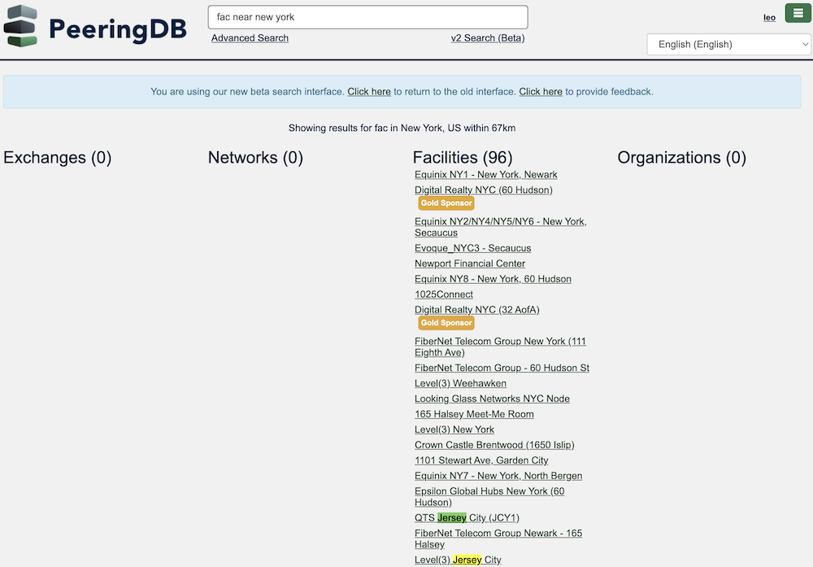
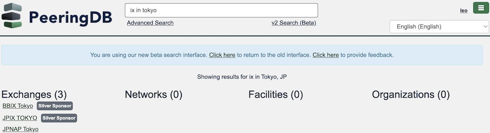

HOWTO: v2 Search
We are testing v2 search in parallel with our production v1 search tools. We encourage you to test it and give us feedback. Is it faster? Does it simplify the search process? Does it give you the results you expect? Your input helps us deliver the tools you want.
When you click one the link for v2 search, you just type your query in the box and hit enter, like normal.
Concept
v2 lets you use some natural language queries in combination with the name for an area. It helps you get the results in fewer searches, ideally just one!
Support for metro sizes
For many areas it will automatically set an appropriate radius. When a common business area crosses a jurisdictional boundary, the search is based on the common business area and not limited to the named metro area.

Fig 1: A search for fac near new york includes results for facilities in Jersey City, NJ
When you want a different radius, our Advanced Search tool lets you manually set a specific radius based on any street address.
Searching directly for IXs
v2 search finds exchanges based on the facilities they are in. You don’t need to search for facilities in a metro area and then find the exchanges they host. You can do it in a single search.

Fig 2: A search for ix in tokyo finds exchanges at facilities we know about in Tokyo
Support for campus
v2 search knows about campus objects – interconnected facilities under common ownership – so you can find campuses for an area as well a getting a full list of facilities.

Fig 3: Searching for a campus in amsterdam shows just three entries

Fig 4: Searching for a fac in amsterdam shows many more results